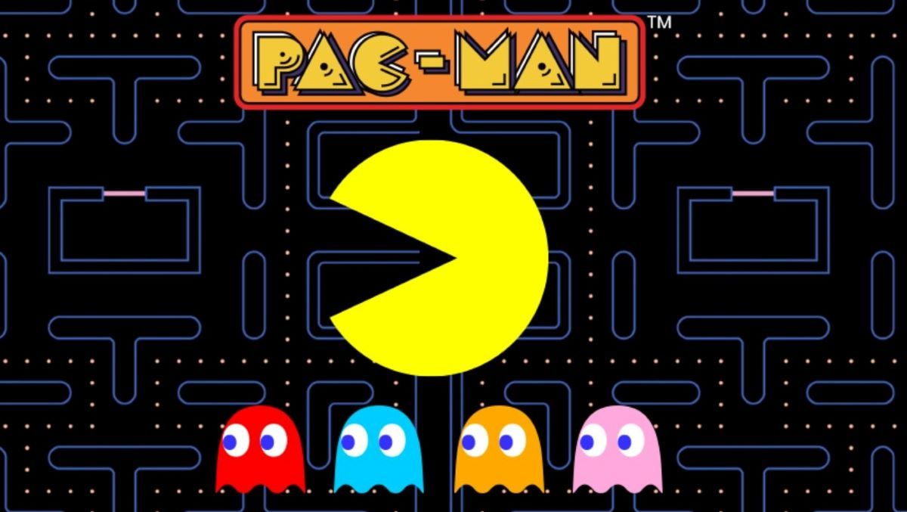

A játék leírása
A Pacman egy klasszikus videojáték, ahol egy sárga karaktert irányítasz.
A cél az, hogy megedd az összes pontot a pályán.
Kerülnöd kell a szellemeket, mert ha elkapnak, veszítesz.

A Pacman egy klasszikus videojáték, ahol egy sárga karaktert irányítasz.
A cél az, hogy megedd az összes pontot a pályán.
Kerülnöd kell a szellemeket, mert ha elkapnak, veszítesz.

A Pacman játék 1980-ban készült Japánban.
Gyorsan nagyon népszerű lett az egész világon.
A játék különlegessége az egyszerűsége és a szórakoztató játékmenet.
A mai napig az egyik legismertebb videojáték.

A játék egy labirintusban játszódik, amelyben egy kis sárga fejet kell irányítani. A cél az, hogy a pontokat megegye, és elkerülje a négy szellem ellenséget, amelyek el akarják kapni Pac-Man-t.